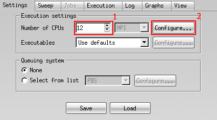
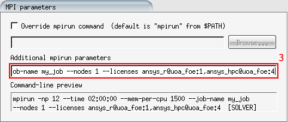

ANSYS
Warning
ANSYS is proprietary software. Make sure you meet the requirements for it's usage.
Available Modules¶
module load ANSYS/2023R2module load ANSYS/2023R2module load ANSYS/19.2Licences¶
The following network licence servers can be accessed from the NeSI cluster.
| Institution | Faculty | Uptime | |||||||||
|---|---|---|---|---|---|---|---|---|---|---|---|
| University of Auckland | Faculty of Engineering | 72% | |||||||||
| Orbis Diagnostics | 100% | ||||||||||
| Auckland University of Technology | Faculty of Engineering | 72% | |||||||||
| University of Waikato | 72% | ||||||||||
| University of Canterbury | 99% | ||||||||||
| University of Otago | 99% | ||||||||||
|
|||||||||||
If you do not have access, or want a server connected Contact our Support Team.
License Types¶
The three main ANSYS licenses are;
-
ANSYS Teaching License (aa_t)
This is the default license type, it can be used on up to 6 CPUs on models with less than 512k nodes
-
ANSYS Research license (aa_r)
No node restrictions. Can be used on up to 16 CPUs, for every additional CPU over 16 you must request additional 'aa_r_hpc' licenses.
-
ANSYS HPC License (aa_r_hpc)
One of these is required for each CPU over 16 when using a research license.
License Order¶
Whether to use a teaching or research license must be set manually. If your job is greater than the node limit, not switching to the research license before submitting a job will cause the job to fail.
The license order can be changed in workbench under tools > license
preferences (provided you have X11 forwarding set up), or by running
either of the following (ANSYS module must be loaded first using
module load ANSYS).
prefer_research_license
prefer_teaching_license
Warning
License preferences are individually tracked by each version of ANSYS. Make sure you set preferences using the same version as in your script.
Journal files¶
Some ANSYS applications take a 'journal' text file as input. It is often
useful to create this journal file in your SLURM script (tidiness,
submitting jobs programmatically, etc). This can be done by using cat
to make a file from a
'heredoc'.
Below is an example of this from a fluent script.
#!/bin/bash -e
#SBATCH --job-name Fluent_Array
#SBATCH --time 01:00:00 # Wall time
#SBATCH --mem 512MB # Memory per node
#SBATCH --licenses aa_r:1 # One license token per CPU, less 16
#SBATCH --array 1-100
#SBATCH --hint nomultithread # No hyperthreading
module load ANSYS/2023R2
JOURNAL_FILE=fluent_${SLURM_JOB_ID}.in
cat ${JOURNAL_FILE}
/file/read-case-data testCase${SLURM_ARRAY_TASK_ID}.cas
/solve/dual-time-iterate 10
/file/write-case-data testOut${SLURM_ARRAY_TASK_ID}.cas
/exit yes
EOF
# Use one of the -v options 2d, 2ddp, 3d, or 3ddp
fluent -v3ddp -g -i ${JOURNAL_FILE}
rm ${JOURNAL_FILE}
JOURNAL_FILE is a variable holding the name of a file, the next line
cat creates the file then writes a block of text into it. The block of
text written is everything between an arbitrary string (in this case
EOF) and its next occurrence.
In this case (assuming it is the first run of the array and the
jobid=1234567), the file fluent_1234567.in will be created:
/file/read-case-data testCase1
; This will read testCase1.cas and testCase1.dat
; Inputs can be read separately with 'read-case' and 'read-data'
/solve/dual-time-iterate 10
; Solve 10 time steps
/file/write-case-data testCase1 ok
; Since our output name is the same as our input, we have to provide conformation to overwrite, 'ok'
exit yes
; Not including 'exit yes' will cause fluent to exit with an error. (Everything will be fine, but SLURM will read it as FAILED).
then called as an input fluent -v3ddp -g -i fluent_1234567.in,
then deleted rm fluent_1234567.in
This can be used with variable substitution to great effect as it allows the use of variables in what might otherwise be a fixed input.
Tip
Comments can be added to journal files using a ;. For example:
; This is a comment
Fluent¶
Some great documentation on journal files
fluent -help for a list of commands.
Must have one of these flags.
2d |
2D solver, single point precision. |
3d |
3D solver, single point precision. |
2ddp |
2D solver, double point precision. |
3ddp |
3D solver, double point precision. |
Single process with a single thread (2 threads if hyperthreading enabled).
Usually submitted as part of an array, as in the case of parameter sweeps.
#!/bin/bash -e
#SBATCH --job-name Fluent-Serial
#SBATCH --licenses aa_r@uoa_foe:1 #One research license.
#SBATCH --time 00:05:00 # Walltime
#SBATCH --cpus-per-task 1 # Double if hyperthreading enabled
#SBATCH --mem 512MB # total memory (per node)
#SBATCH --hint nomultithread # Hyperthreading disabled
module load ANSYS/2023R2
JOURNAL_FILE=/share/test/ansys/fluent/wing.in
fluent 3ddp -g -i ${JOURNAL_FILE}
Multiple processes each with a single thread.
Not limited to one node.
Model will be segmented into -t pieces which
should be equal to --ntasks.Each task could be running on a different node leading to increased
communication overhead. Jobs can be limited to a single node by
adding--nodes=1` however this will increase
your time in the queue as contiguous cpu's are harder to
schedule.
#!/bin/bash -e
#SBATCH --job-name Fluent-Dis
#SBATCH --time 00:05:00 # Walltime
#SBATCH --licenses aa_r@uoa_foe:1,aa_r_hpc@uoa_foe:20
##One research license, (ntasks-16) hpc licenses
#SBATCH --nodes 1 # Limit to n nodes (Optional)
#SBATCH --ntasks 8 # Number processes
#SBATCH --cpus-per-task 1 # Double if hyperthreading enabled
#SBATCH --mem-per-cpu 1500 # Fine for small jobs; increase if needed
#SBATCH --hint nomultithread # Hyperthreading disabled
module load ANSYS/2023R2
JOURNAL_FILE=/share/test/ansys/fluent/wing.in
fluent 3ddp -g -t ${SLURM_NTASKS} -i ${JOURNAL_FILE}
Interactive¶
While it will always be more time and resource efficient using a slurm script as shown above, there are occasions where the GUI is required. If you only require a few CPUs for a short while you may run the fluent on the login node, otherwise use of an slurm interactive session is recommended.
For example.
salloc --job-name flUI --nodes 4 --ntasks-per-node 8 --mem-per-cpu 1500 --time 04:00:00
Will return;
salloc: Pending job allocation 10270935
salloc: job 10270935 queued and waiting for resources
salloc: job 10270935 has been allocated resources
salloc: Granted job allocation 10270935
salloc: Waiting for resource configuration
salloc: Nodes wbn[053-056] are ready for job
Tip
Include all the commands you would usually use in your slurm header here.
Once you have your allocation, run the command
fluent
You will then be presented with the launcher, make any necessary changes then click launch.
If everything has set up correctly you should see a printout of the hostnames with the resources requested. Note: 'host' should be mahuika0[1-2].
n24-31 wbn056 8/72 Linux-64 71521-71528 Intel(R) Xeon(R) E5-2695 v4
n16-23 wbn055 8/72 Linux-64 52264-52271 Intel(R) Xeon(R) E5-2695 v4
n8-15 wbn054 8/72 Linux-64 177090-177097 Intel(R) Xeon(R) E5-2695 v4
n0-7 wbn053 8/72 Linux-64 48376-48384 Intel(R) Xeon(R) E5-2695 v4
host mahuika01 Linux-64 185962 Intel(R) Xeon(R) E5-2695 v4
Warning
Closing the fluent GUI will not end the SLURM interactive session. Use
exit or scancel <jobid> when finished, else you will continue to
'use' the requested CPUs.
Checkpointing¶
It is best practice when running long jobs to enable autosaves.
/file/autosave/data-frequency
Where `` is the number of iterations to run before creating a save.
In order to save disk space you may also want to include the line
Interrupting¶
Including the following code at the top of your journal file will allow you to interrupt the job.
(set! checkpoint/exit-filename "./exit-fluent")
Creating a file named exit-fluent in the run directory will cause the
job to save the current state and exit (touch exit-fluent). This will
also write a new journal file called restart.inp that restarts the
simulation at that point.
User Defined Functions¶
When compiling code, make sure to module load gimkl in addition to the
ANSYS module.
Case Definition¶
When setting up the case file on your local machine, make sure you select 'Compiled UDF', and select the `.c` source file. You can also specify the name of the library, the default being 'libudf', if possible you should stick with the default name.
Make sure all names follows unix naming conventions (no spaces or special characters) and are the same on the cluster as when you defined it.
It will also save you time if the that the path to your UDF source is
relative. The easiest way to do this is to have the source file in the
same directory as your .cas file, then specify only the name as your
UDF source.
When calling a function, make sure you select the compiled NOT the interpreted version.
`udf funcName` is funcName as being interpreted directly from your `.c` source file.
`udf funcName::libudf` is funcName as compiled in library `libudf`
Compilation¶
When running in a new environment for the first time (local machine,
Mahuika, Māui), the C code will have to first be compiled. The compiled
code will be placed in a directory with the name of the library (by
default this will be libudf/.
If you copied the compiled library from a different environment, you will have to delete this directory first.
If the compiled library with the name specified in the case file (e.g.
libudf/) is not found, fluent will try to compile it from the
specified source file.
If for some reason the UDF does not compile automatically, you can manually build it with the following command in your fluent journal file (should go before loading model).
define/user-defined/compiled-functions compile "" yes "" "" "" "" "" ""
Note, the command must end with two "" to indicate there are no more
files to add.
As an example
define/user-defined/compiled-functions compile "libudf" yes "myUDF.c" "" ""
Will compile the code myUDF.c into a library named libudf
Loading File¶
define/user-defined/compiled-functions load libudf
Will load the library libudf to be accessible by ANSYS.
UDF errors¶
Error: chip-exec: function
might be using interpreted func
solution specify as relative path, or unload compiled lib before saving .cas file.
CFX¶
cfx5solve -help for a list of commands.
Single process with a single thread (2 threads if hyperthreading enabled). Usually submitted as part of an array, as in the case of parameter sweeps.
#!/bin/bash -e
#SBATCH --job-name CFX-serial
#SBATCH --licenses aa_r@uoa_foe:1 #One research license
#SBATCH --time 00:05:00 # Walltime
#SBATCH --cpus-per-task 1 # Double if hyperthreading enabled
#SBATCH --mem 512MB # total mem
#SBATCH --hint nomultithread # Hyperthreading disabled
module load ANSYS/2023R2
input="/share/test/ansys/cfx/pump.def"
cfx5solve -batch -def ${input}
Multiple processes each with a single thread.
Not limited to one node.
Model will be segmented into -np pieces which should be equal to --ntasks.
Each task could be running on a different node leading to increased communication overhead. Jobs can be limited to a single node by adding --nodes=1 however this may increase you time in the queue as contiguous cpu's are harder to schedule.
#!/bin/bash -e
#SBATCH --job-name ANSYS-Dis
#SBATCH --time 00:05:00 # Walltime
#SBATCH --licenses aa_r@uoa_foe:1,aa_r_hpc@uoa_foe:20
##One research license, (ntasks-16) hpc licenses
#SBATCH --nodes 1 # Limit to n nodes (Optional)
#SBATCH --ntasks 36 # Number processes
#SBATCH --cpus-per-task 1 # Double if hyperthreading enabled
#SBATCH --mem-per-cpu 512MB # Standard for large partition
#SBATCH --hint nomultithread # Hyperthreading disabled
module load ANSYS/2023R2
input="/share/test/ansys/mechanical/structural.dat"
cfx5solve -batch -def "${input} -part ${SLURM_NTASKS}
Tip
Initial values path specified in '.def' file can be overridden using
the -ini flag.
CFX-Post¶
Even when running headless (without a GUI) CFX-Post requires connection to a graphical output. For some cases it may be suitable running CFX-Post on the login node and using your X-11 display, but for larger batch compute jobs you will need to make use of a dummy X-11 server.
This is as simple as prepending your command with the X Virtual Frame Buffer command.
xvfb-run cfx5post input.cse
Mechanical APDL¶
Examples¶
Single process with a single *thread (2 threads if hyperthreading enabled). Usually submitted as part of an array, as in the case of parameter sweeps.
#!/bin/bash -e
#SBATCH --job-name ANSYS-serial
#SBATCH --licenses aa_r@uoa_foe:1
#SBATCH --time 00:05:00 # Walltime
#SBATCH --mem 1500M # total mem
#SBATCH --hint nomultithread # Hyperthreading disabled
module load ANSYS/2023R2
input=${ANSYS_ROOT}/ansys/data/verif/vm263.dat
mapdl -b -i "${input}
Single process multiple *threads. All threads must be on the same node, limiting scalability.
Number of threads is set by -np and should be equal to--cpus-per-task.
Not recommended if using more than 8 cores (16 CPUs if hyperthreading enabled).
#!/bin/bash -e
#SBATCH --job-name ANSYS-Shared
#SBATCH --licenses aa_r@uoa_foe:1
#SBATCH --time 00:05:00 # Walltime
#SBATCH --cpus-per-task 8 # Double if hyperthreading enabled
#SBATCH --mem 12G # 8 threads at 1500 MB per thread
#SBATCH --hint nomultithread # Hyperthreading disabled
module load ANSYS/2023R2
input=${ANSYS_ROOT}/ansys/data/verif/vm263.dat
mapdl -b -np ${SLURM_CPUS_PER_TASK} -i ${input}
Multiple processes each with a single thread.
Not limited to one node.
Model will be segmented into -np pieces which should be equal to --ntasks.
Each task could be running on a different node leading to increased communication overhead.
Jobs can be limited to a single node by adding --nodes=1 however this will increase your time in the queue as contiguous cpu's are harder to schedule.
Distributed Memory Parallel is currently not supported on Māui.
#!/bin/bash -e
#SBATCH --job-name ANSYS-Dis
#SBATCH --licenses aa_r@uoa_foe:1,aa_r_hpc@uoa_foe:4
#SBATCH --time 00:05:00 # Walltime
#SBATCH --nodes 1 # (OPTIONAL) Limit to n nodes
#SBATCH --ntasks 16 # Number processes
#SBATCH --mem-per-cpu 1500
#SBATCH --hint nomultithread # Hyperthreading disabled
module load ANSYS/2023R2
input=${ANSYS_ROOT}/ansys/data/verif/vm263.dat
mapdl -b -dis -np ${SLURM_NTASKS} -i "${input}"
Not all MAPDL solvers work using distributed memory.
| Sparse | ✔ |
| PCG | ✔ |
| ICCG | ✖ |
| JCG | ✖ |
| QMR | ✖ |
| Block Lanczos eigensolver | ✖ |
| PCG Lanczos eigensolver | ✔ |
| Supernode eigensolver | ✖ |
| Subspace eigensolver | ✔ |
| Unsymmetric eigensolver | ✔ |
| Damped eigensolver | ✔ |
| QRDAMP eigensolver | ✖ |
| Element formulation | ✔ |
| Results calculation | ✔ |
| Pre/Postprocessing | ✖ |
LS-DYNA¶
Fluid-Structure Example¶
#!/bin/bash -e
#SBATCH --job-name LS-DYNA
#SBATCH --account nesi99999 # Project Account
#SBATCH --time 01:00:00 # Walltime
#SBATCH --ntasks 16 # Number of CPUs to use
#SBATCH --mem-per-cpu 512MB # Memory per cpu
#SBATCH --hint nomultithread # No hyperthreading
module load ANSYS/2023R2
input=3cars_shell2_150ms.k
lsdyna -dis -np $SLURM_NTASKS i="$input" memory=$(($SLURM_MEM_PER_CPU/8))M
FENSAP-ICE¶
FENSAP-ICE is a fully integrated ice-accretion and aerodynamics simulator.
Currently FENSAP-ICE is only available on Mahuika and in ANSYS 19.2.
The following FENSAP solvers are compatible with MPI
- FENSAP
- DROP3D
- ICE3D
- C3D
- OptiGrid
Case setup¶
With GUI¶
If you have set up X-11 forwarding, you may launch the FENSAP ice using
the command fensapiceGUI from within your FENSAP project directory.
- Launch the run and select the desired number of (physical) CPUs.
- Open the 'configure' panel. 
-
Under 'Additional mpirun parameters' add your inline SLURM options. You should include at least.
--job-name my_job --mem-per-cpu memory --time time --licenses --hint nomultithreadNote: All these parameters will be applied to each individual step. 4. Start the job. You can track progress under the 'log' tab. 
You may close your session and the job will continue to run on the compute nodes. You will be able to view the running job at any time by opening the GUI within the project folder.
Info
Submitting your job through the use of the GUI has disadvantages and may not be suitable in all cases. - Closing the session or losing connection will prevent the next stage of the job starting (currently executing step will continue to run). It is a good idea to launch the GUI inside a tmux/screen session then send the process to background to avoid this. - Each individual step will be launched with the same parameters given in the GUI. - By default 'restart' is set to disabled. If you wish to continue a job from a given step/shot you must select so in the dropdown menu.
Using fensap2slurm¶
Set up your model as you would normally, except rather than starting the
run just click 'save'. You do not need to set number of CPUs or MPI
configuration.
Then in your terminal type fensap2slurm path/to/project or run
fensap2slurm from inside the run directory.
This will generate a template file for each stage of the job, edit these as you would a normal SLURM script and set the resources requirements.
For your first shot, it is a good idea to set CONTINUE=FALSE for the
last stage of the shot, that way you can set more accurate resource
requirements for the remainder.
The workflow can then by running .solvercmd e.g bash .solvercmd.
Progress can be tracked through the GUI as usual.
ANSYS-Electromagnetic¶
ANSYS-EM jobs can be submitted through a slurm script or by interactive session.
RSM¶
Unlike other ANSYS applications ANSYS-EM requires RSM (remote solver
manager) running on all nodes. The command startRSM has been written
to facilitate this and needs to be run after starting the slurm job
but before running edt. Please contact NeSI support if the command is
not working for you.
Example Slurm Script¶
#!/bin/bash -e
#SBATCH --time 04:00:00
#SBATCH --nodes 2
#SBATCH --ntasks-per-node 36
#SBATCH --mem-per-cpu 1500
module load ANSYS/2023R2
INPUTNAME="Sim1.aedt"
startRSM
ansysedt -ng -batchsolve -distributed -machinelistfile=".machinefile" -batchoptions "HFSS/HPCLicenseType=Pool" $INPUTNAME
All batch options can be listed using
ansysedt -batchoptionhelp
(Note, this requires a working X-server)
Info
Each batch option must have it's own flag, e.g.
-batchoptions "HFSS/HPCLicenseType=Pool" -batchoptions "Desktop/ProjectDirectory=$PWD" -batchoptions "HFSS/MPIVendor=Intel"
EM Interactive¶
First start an interactive slurm session.
salloc --job-name edt_interactive --nodes 2 --ntasks-per-node 36 --mem-per-cpu 1500
Then load your desired version of ANSYS
module load ANSYS/2023R2
Run the script to start startRSM, this will start ANSYS remote solver on
your requested nodes, and set the environment variable MACHINELIST.
startRSM
Then launch ansys edt with the following flags
ansysedt -machinelist file=".machinefile" -batchoptions "HFSS/HPCLicenseType=Pool HFSS/MPIVendor=Intel HFSS/UseLegacyElectronicsHPC=1"
Multiphysics¶
Example - MAPDL Fluent Interaction¶
#!/bin/bash -e
#SBATCH --job-name ANSYS_FSI
#SBATCH --account nesi99999 # Project Account
#SBATCH --time 01:00:00 # Walltime
#SBATCH --ntasks 16 # Number of CPUs to use
#SBATCH --mem-per-cpu 2GB # Memory per CPU
#SBATCH --hint nomultithread # No hyperthreading
module load ANSYS/2023R2
COMP_CPUS=$((SLURM_NTASKS-1))
MECHANICAL_CPUS=1
FLUID_CPUS=$((COMP_CPUS-MECHANICAL_CPUS))
export SLURM_EXCLUSIVE="" # don't share CPUs
echo "CPUs: Coupler:1 Struct:$MECHANICAL_CPUS Fluid:$FLUID_CPUS"
echo "STARTING SYSTEM COUPLER"
cd Coupling
# Run the system coupler in the background.
srun -N1 -n1 $WORKBENCH_CMD \
ansys.services.systemcoupling.exe \
-inputFile coupling.sci || scancel $SLURM_JOBID &
cd ..
serverfile="$PWD/Coupling/scServer.scs"
while [[ ! -f "$serverfile" ]] ; do
sleep 1 # waiting for SC to start
done
sleep 1
echo "PARSING SYSTEM COUPLER CONFIG"
{
read hostport
port=${hostport%@*}
node=${hostport#*@}
read count
for solver in $(seq $count)
do
read solname
read soltype
case $soltype in
Fluid) fluentsolname=$solname;;
Structural) mechsolname=$solname;;
esac
done
} < "$serverfile"
echo " Port number: $port"
echo " Node name: $node"
echo " Fluent name: $fluentsolname"
echo " Mechanical name: $mechsolname"
echo "STARTING ANSYS"
cd Structural
# Run ANSYS in the background, alongside the system coupler and Fluent.
mapdl -b -dis -mpi intel -np $MECHANICAL_CPUS \
-scport $port -schost $node -scname "$mechsolname" \
-i "structural.dat" > struct.out || scancel $SLURM_JOBID &
cd ..
sleep 2
echo "STARTING FLUENT"
cd FluidFlow
# Run Fluent in the background, alongside the system coupler and ANSYS.
fluent 3ddp -g -t$FLUID_CPUS \
-scport=$port -schost=$node -scname="$fluentsolname" \
-i "fluidFlow.jou" > fluent.out || scancel $SLURM_JOBID &
cd ..
# Before exiting, wait for all background tasks (the system coupler, ANSYS and
# Fluent) to complete.
wait
Best Practices¶
GPU acceleration support¶
GPUs can be slow for smaller jobs because it takes time to transfer data from the main memory to the GPU memory. We therefore suggest that you only use them for larger jobs, unless benchmarking reveals otherwise.
Interactive use¶
It is best to use journal files etc to automate ANSYS so that you can submit batch jobs, but when interactivity is really needed alongside more CPU power and/or memory than is reasonable to take from a login node (maybe postprocessing a large output file) then an alternative which may work is to run the GUI frontend on a login node while the MPI tasks it launches run on a compute node. This requires using salloc instead of sbatch, for example:
salloc -A nesi99999 -t 30 -n 16 -C avx --mem-per-cpu=512MB bash -c 'module load ANSYS; fluent -v3ddp -t$SLURM_NTASKS'
As with any job, you may have to wait a while before the resource is granted and you can begin, so you might want to use the --mail-type=BEGIN and --mail-user= options.
Hyperthreading¶
Utilising hyperthreading (ie: removing the "--hint=nomultithread" sbatch
directive and doubling the number of tasks) will give a small speedup on
most jobs with less than 8 cores, but also doubles the number of
aa_r_hpc license tokens required.